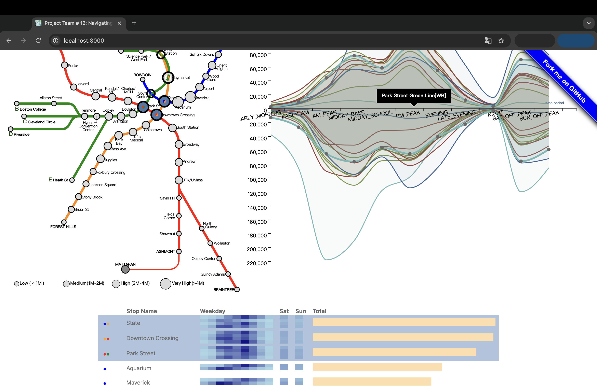
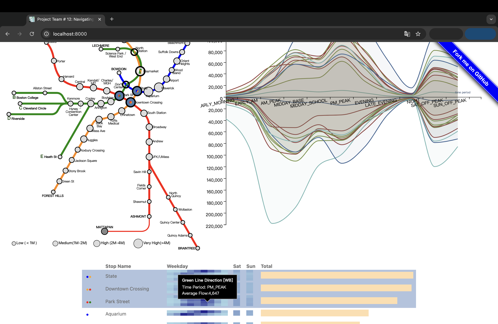

Demo Video
Visualization explanation
1. Interactive Map Visualization

The interactive map provides a clear spatial overview of the MBTA network, showing the layout of lines and stations. Each station is represented as a circle, with the size encoding average passenger flow, making it easy to identify high-traffic areas. Line colors match the MBTA system (e.g., Red Line, Green Line), enhancing familiarity. Tooltips provide station-specific details without overcrowding the visualization.
Interaction: Users can click on a station to update the bar and line charts, linking spatial data with specific flow and time trends for seamless exploration.
2. Bar Chart Visualization

The bar chart enables direct comparison of passenger flows across stations within a line. Horizontal bars ensure readability, and colors correspond to MBTA line colors for consistency with the map. The chart provides detailed insights into total and directional flows (on/off traffic), helping users identify patterns for specific stations.
Interaction: Selecting a station on the map updates the bar chart, and vice versa, allowing users to investigate flow trends interactively.
3. Line Chart Visualization

The line chart visualizes ridership trends over time for selected stations or lines. The x-axis represents time periods (e.g., AM Peak, PM Peak), while the y-axis shows passenger flow. Different lines use colors to distinguish directional or line-based trends, making it easy to spot temporal variations.
Interaction: The chart dynamically updates based on user selections on the map or bar chart, linking temporal patterns with spatial and categorical data.
Combined Design
 Together, these visualizations integrate spatial (map), categorical (bar chart), and temporal (line chart) data, providing a comprehensive view of MBTA ridership patterns. The interactive linking between visualizations ensures a cohesive experience, helping users explore data from multiple perspectives while maintaining clarity and engagement.
Link for presentation slides:
Data Analysis
Our project utilizes two main data sources:
{kind=link}
A map visualization of Boston’s MBTA system, representing the spatial layout of lines and stations.
This dataset includes ridership information categorized by time periods, routes/lines, and individual stops.
To align with the problem statement and effectively visualize traffic congestion and passenger flow, we implemented the following preprocessing steps:
Data Filtering: Irrelevant data fields were removed to focus on station-level ridership, time periods, and directional on/off flows. This ensures clarity and removes noise from the dataset.
Data Aggregation: Metrics such as total foot traffic per station and ridership differences between time periods were calculated. Stations were further categorized into High, Average, or Low traffic levels for easier visualization.
Directional Analysis: Passenger flow was split into inbound and outbound categories to provide additional granularity in understanding ridership patterns.
Time Period Adjustments: Ridership data was organized by predefined time categories (e.g., AM Peak, PM Peak) to facilitate temporal comparisons.
Task Analysis
Summary of task table.
| Index(ID#) | Whether it is done and why if not | "Domain" Task | Analytic Task (low-level, "Query") | Search Task (Mid-level) | Analyze Task (High-level) |
|---|---|---|---|---|---|
| 1 | Yes, because the map visualizes congestion at nearby stations during peak hours, allowing for comparison and spatial analysis. | Examine how station congestion impacts nearby stations during peak hours. | compare | locate | derive |
| 2 | Yes, because the line chart shows ridership fluctuations across different time periods, such as AM Peak, PM Peak, and off-peak hours. | Identify patterns of ridership fluctuation due to weather, time of day, or events. | summarize | explore | derive |
| 3 | Yes, because the bar chart identifies high-traffic stations along each line, helping focus on key stations for potential improvement. | Determine high traffic stations to focus improvement. | identify | browse | present |
| 4 | Yes, because the map and charts allow us to explore congestion patterns in relation to other factors, such as time or station location. | Relating traffic congestion with other circumstances. | discover | explore | summarize |
| 5 | No, because we focused on daily variations instead of seasonal variations, as seasonal data was not included in the dataset. | Compare seasonal variation between routes. | compare | lookup | present |
| 6 | Yes, because the map and bar chart allow us to compare congestion patterns between key stations and adjacent areas. | Compare the congestion pattern between key Boston stations and adjacent areas. | compare | browse | present |
| 7 | Yes, because the bar chart and tooltips show ridership differences between weekdays and weekends for each station. | Ridership difference between weekday and weekend. | compare | lookup | present |
| 8 | Yes, because the treemap categorizes stations into high, average, and low traffic levels, visualizing overall passenger flow across stops. | Visualize overall passenger flow across different MBTA stops using visualization. | compare | locate | derive |
| 9 | Yes, because the line chart displays directional ridership differences (inbound/outbound) for selected stations. | Examine directional ridership differences for selected stations. | identify | browse | present |
| 10 | Yes, because the map and bar chart highlight and filter stations with similar ridership patterns using interactive features. | Highlight and filter stations with similar ridership patterns. | compare | browse | summarize |
| 11 | Yes, because the line chart effectively highlights ridership peaks during specific time periods, such as AM Peak and PM Peak. | Understand which time periods (e.g., AM Peak, PM Peak) experience the highest ridership. | identify | lookup | summarize |
| 12 | Yes, because the line chart visualizes inbound and outbound flow trends over time for selected stations. | Analyze directional flow (inbound/outbound) over time for a selected station. | compare | locate | derive |
Design Process
Sketches


We designed the visualization content based on the specific characteristics of the MBTA data. Our goal was to represent the flow of passengers at each station clearly, allowing users to easily compare traffic across stations and lines. One of our key considerations was the ability to switch between different MBTA lines, enabling users to analyze how passenger flow varies across the system. By facilitating these comparisons, we aimed to provide users with new perspectives on Boston's transportation patterns.
To achieve this, we implemented an interactive map where users can click on the circles representing stations. This interaction dynamically links to the bar chart and line chart, which then display detailed data about the selected station's routes and passenger flow. This design ensures that users can explore specific stations while maintaining an overview of the larger system.
Through the iterative development process, we enhanced the line chart by incorporating directionality (dir_id) with distinct colors, allowing for more granular analysis of inbound and outbound flows. This modification added an extra layer of detail, making the visualization more informative.
The interaction between the bar chart and the map was also refined, ensuring seamless linking between visualizations. When a user selects a station on the bar chart, the corresponding station is highlighted on the map, and its detailed flow data is shown on the line chart. This integration creates a cohesive experience, connecting different aspects of the dataset into a unified visualization.
While the current version of our visualization provides significant insights, there is still room for improvement. For instance, additional features such as filtering by time period or showing historical trends could make the visualization even more comprehensive. We will continue to iterate based on user feedback and usability testing to refine the design further and meet user needs effectively.
Conclusion
The integration between the map, bar chart, and line chart has been successfully implemented, allowing for seamless interaction and linking across these visualizations. We effectively utilized visual encodings such as color, lines, and bars to represent key data points and trends. This interconnected system enables users to explore MBTA ridership data in an intuitive and interactive way.
Moving forward, we plan to further enhance the appearance and functionality of the visualizations. For example, the bar chart could be adjusted to display more granular data by dividing each bar into two segments: one representing total on-flow and the other representing total off-flow, while still maintaining the overall total flow for comparison. This modification would improve the clarity and depth of the data being presented.
Additionally, we aim to make the visualizations more interactive by adding features such as time-based filtering or customizable data views, which would allow users to focus on specific aspects of the data. These improvements will ensure that the visualizations are not only informative but also adaptable to diverse user needs.
This project has laid a strong foundation for analyzing and visualizing MBTA ridership patterns, and we look forward to iterating further based on user feedback and identifying areas where the visualizations can provide even greater insight.
Acknowledgments
List here where any code, packages/libraries, text, images, designs, etc. that you leverage come from.